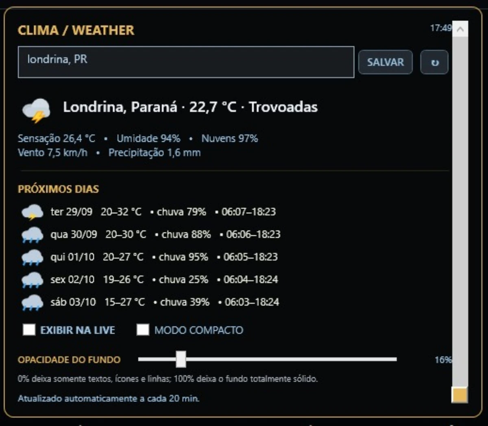

Live Stack em tempo real
Empilhe frames durante a observação para revelar mais sinal em cenas de baixa luminosidade e acompanhar o resultado enquanto a captura acontece.
CAPTURE METEOROS • FAÇA LIVE STACKING • GRAVE E TRANSMITA
Detecte e registre meteoros, acompanhe o céu com Live Stacking em tempo real e grave ou transmita suas observações em uma única plataforma para Windows. Use câmeras USB e IP compatíveis, ajuste a imagem e organize sua operação sem depender de vários programas para essas funções.

O GOAT reúne recursos astronômicos e de baixa luminosidade com streaming integrado e uma central flexível de câmeras. A observação, a captura e a live podem acontecer dentro do mesmo fluxo.
Empilhe frames durante a observação para revelar mais sinal em cenas de baixa luminosidade e acompanhar o resultado enquanto a captura acontece.
Monitore o céu e configure a detecção e o registro automático de eventos luminosos, meteoros e outros fenômenos de passagem.
Crie calibrações com quantidade configurável de frames e salve seus masters para um fluxo de Live Stack mais controlado.
Leve sua observação ao vivo sem sair do GOAT. Use cenas, áudio, overlays e suas fontes de câmera no mesmo ambiente em que observa, detecta e captura.
Trabalhe com fontes USB e IP compatíveis e leve também o smartphone para o ecossistema usando o GOAT Cam.
Registre vídeo e imagens no mesmo ambiente em que você observa, transmite, monitora e ajusta suas fontes.
Use nitidez, redução de ruído, controles de cor, histograma, ajustes de lente e outros recursos para extrair mais da imagem.
Registre eventos astronômicos, fotos e vídeos para consultar seus arquivos após a observação.
Adicione data, hora, textos, logo e GIF animado sobre a composição para identificar observações, transmissões e gravações.
Acompanhe temperatura, umidade, nuvens, vento, precipitação e horários solares sem sair do programa.
Observe, empilhe, detecte, grave e transmita dentro do mesmo ambiente. O GOAT PRO Studio foi pensado para reduzir a necessidade de dividir uma observação astronômica entre vários programas diferentes.
Acompanhe o céu, empilhe frames, use calibração DARK/FLAT, detecte e registre eventos automaticamente e leve a própria observação para uma transmissão ao vivo.
Use diferentes câmeras no mesmo projeto. O smartphone Android também pode entrar como câmera integrada ao GOAT PRO Studio pela rede local.
Faça live, grave, fotografe e use cenas, áudio, textos, logos, filtros e overlays sem abandonar o ambiente de observação e captura.
Use os recursos de gravação, fotografia e astrodeteção para registrar fenômenos e guardar os resultados da sessão.
Seu celular também pode fazer parte da estação. O GOAT Cam transforma o smartphone Android em uma câmera integrada ao GOAT PRO Studio pela rede local, ampliando suas possibilidades sem exigir outra câmera dedicada.
Escolha a aparência que combina com sua estação de observação, captura ou produção.

O painel climático reúne condições atuais e previsão dos próximos dias para apoiar observação do céu, captura e operação em campo.

O desempenho final depende da resolução, FPS, codec, quantidade de câmeras, filtros e recursos utilizados ao mesmo tempo.
Você não está comprando apenas um Live Stack ou apenas um programa de câmera. O GOAT reúne astronomia, astrodeteção, live/streaming, múltiplas fontes, processamento, gravação e o ecossistema GOAT em uma única licença para Windows.
Compra processada pela Kiwify. Após a aprovação, a chave serial é enviada por e-mail, e o instalador fica disponível pelo download protegido. Ativação individual vinculada ao primeiro computador. Confira a compatibilidade antes de comprar.
Compras pela internet: o consumidor pode exercer o direito de arrependimento no prazo legal de 7 dias. Solicitações podem ser feitas pelos canais da Kiwify ou pelo suporte oficial.
O GOAT PRO Studio já inclui recursos de live e streaming no mesmo ambiente de observação, captura e produção. Assim, você pode montar seu fluxo de transmissão dentro do próprio GOAT, junto com suas câmeras, cenas, áudio e overlays.
Não. A live é uma parte do conjunto. O foco do GOAT é reunir observação astronômica, Live Stack, astrodeteção, captura automática de eventos, diferentes tipos de câmera, gravação, processamento e transmissão em um único ambiente.
O GOAT PRO Studio é desenvolvido para Windows. No Android, o GOAT Cam funciona como aplicativo complementar oficial e transforma o smartphone em uma câmera integrada ao Studio pela rede local.
Sim. Esses são dois dos principais diferenciais do produto: empilhamento em tempo real para baixa luminosidade e ferramentas de detecção e registro automático de eventos no céu.
O programa foi desenvolvido para trabalhar com fontes USB e IP compatíveis. A compatibilidade pode variar conforme modelo, protocolo e configuração da câmera.
Após a aprovação do pagamento pela Kiwify, a chave serial é enviada ao e-mail da compra. Utilize a página de download protegido e as instruções de entrega para acessar o instalador.
A licença comercial permite ativação em um computador por vez e fica vinculada ao primeiro PC. Para troca de equipamento, entre em contato com o suporte.
Sim. O GOAT PRO Studio segue em desenvolvimento ativo e novas versões serão disponibilizadas conforme a evolução do produto.
Não. Resolução, FPS, codec, câmera, CPU, GPU e recursos ativos influenciam diretamente o desempenho. Consulte os requisitos e confirme a compatibilidade de sua câmera antes da compra.
O suporte oficial está disponível em goatprostudio.com.br/suporte/. Em compras pela internet, o direito legal de arrependimento pode ser exercido em até 7 dias, pelos canais da Kiwify ou pelo suporte.